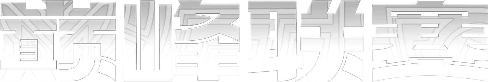
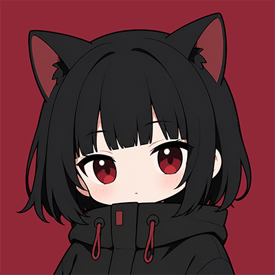
主视觉设计 · 美术监修
负责角色
- 单赛季全平台观赛
- 1,400万+
- 微博话题浏览
- 18亿+
- 抖音主话题浏览
- 3亿+
- 赛事 KOL
- 100+
关于
《梦幻西游》手游是由网易开发的国民级回合制 MMO 手游，以经典西游世界观为背景，融合门派养成、召唤灵收集与策略社交玩法，全球累计超一亿玩家逐梦西游。
巅峰联赛是《梦幻西游》手游赛事体系中的最高等级竞技赛事，历经六年十三届的长线运营，已成长为 MMO 品类中极具影响力的顶级电竞赛事。赛事围绕精锐、勇武、神威三大组别展开激烈角逐，吸引了超 58 万玩家参与报名与观赛，总冠军奖金高达 500 万。赛事通过竞技联动，将硬核 PK 内容与大众趣味整合打通，提供线下可触达、低门槛的互动体验。通过赛事冠名新服拉新、赛事配套版本减负更新、全民竞猜换永久外观等机制，深度反哺游戏生态，有效拉动新服注册与老玩家回流，持续刺激游戏内消费与活跃度。
用户画像分析
- 24 岁以下29%
- 25-30 岁19%
- 31-35 岁16%
- 36-40 岁9%
- 41 岁以上26%
核心年龄
24 岁以下
需求分布
综合分析
受众以 24 岁以下为主（约 29%），41 岁以上占约 26%，25-30 岁占约 19%；男性约 80%，女性约 20%。年龄跨度大、男性主导，且资深玩家留存突出。
核心洞察
-
高知与高净值人群集中
程序员、金融从业者、高校教师等群体占比可观；藏宝阁交易成熟，装备与账号保值、流通性强。
-
长线运营与情怀沉淀
国民级 IP 覆盖学生到 40 岁以上玩家；账号、门派与帮派关系沉淀出高忠诚度与情感认同。
-
策略与社交并重
回合制 PK 重阵容与资源统筹；帮派、家园、CP 等社交系统承接碎片化时间里的陪伴与归属。
- 01 电竞爱好群体 ESPORTS ENTHUSIAST COMMUNITY
- 02 国风文化爱好者 CHINESE FANTASY CULTURE COMMUNITY
- 03 帮派社交群体 GUILD & SOCIAL COMMUNITY
针对目标用户群体，赛事延续融合《梦幻西游》的国风美学与帮派社交场景，打造兼具东方幻想气质与竞技热血的赛场氛围。通过赛事期间的持续曝光和媒体互动，放大明星指挥与俱乐部战队的影响力，加深玩家与赛事的情感联结，为《梦幻西游》手游带来持续的用户增长与市场关注，并通过赛程赛制优化、观赛视效升级、跨界品牌联动等多维度推动巅峰赛事生态进一步发展。


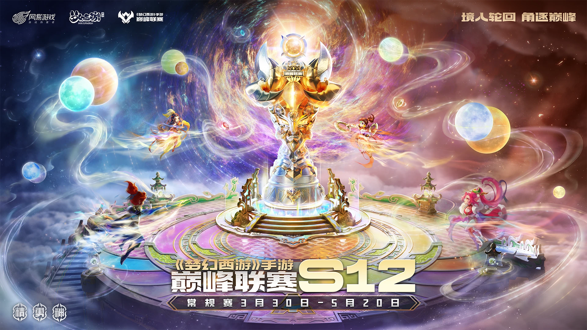

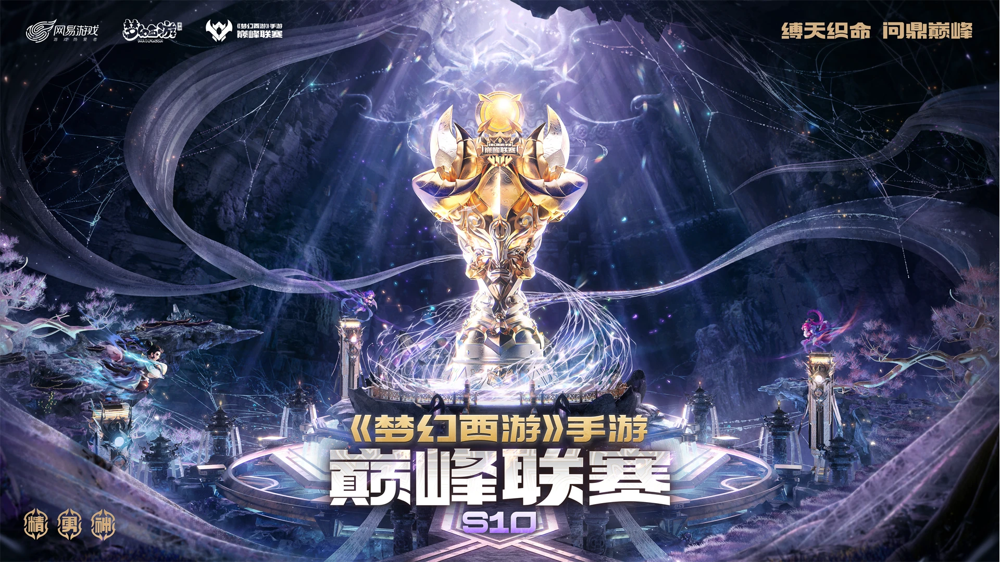
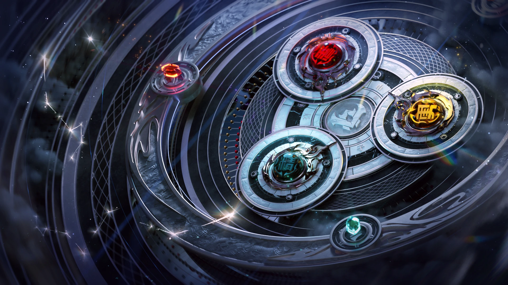
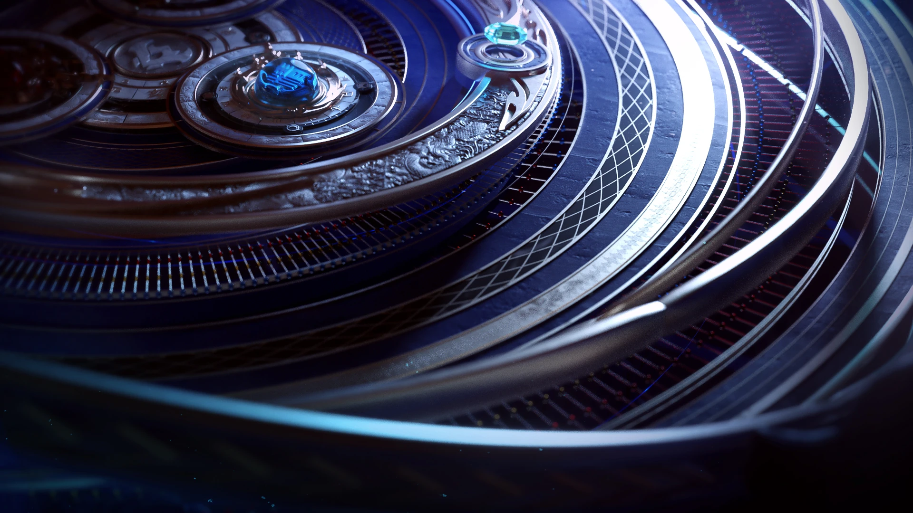
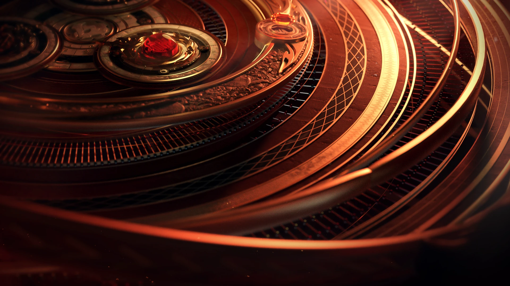

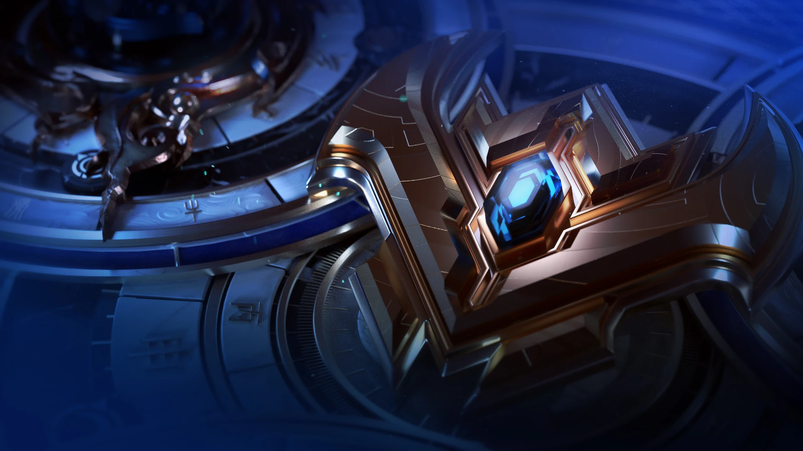

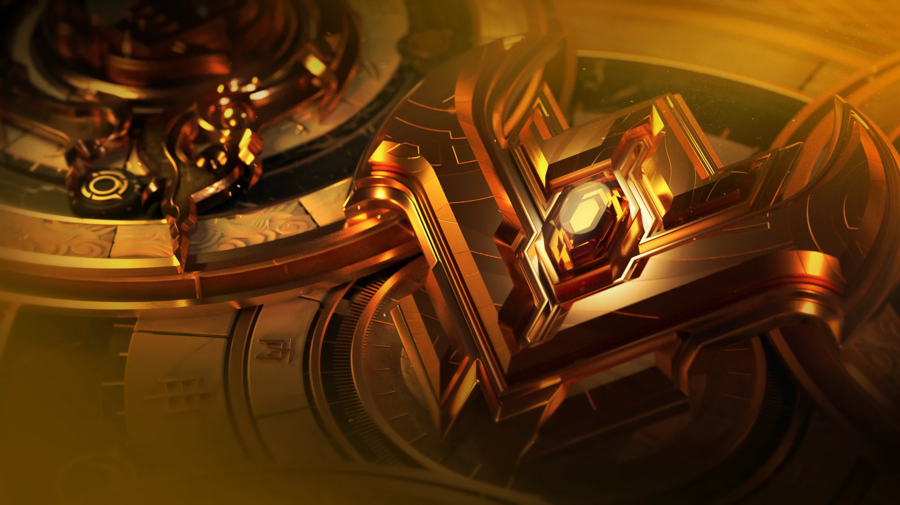


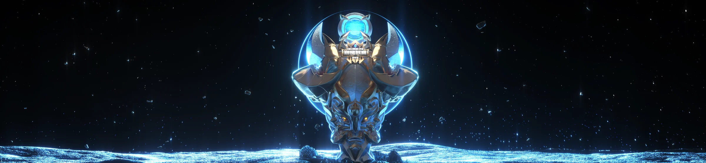
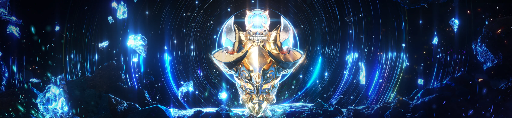